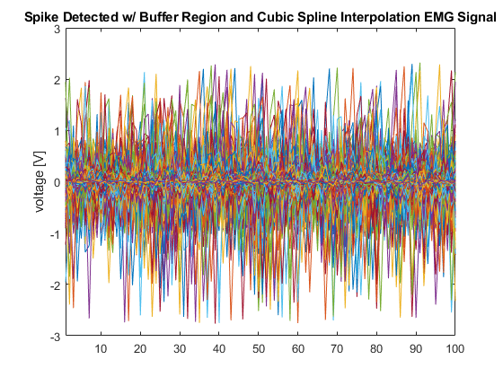

Contents
Shakthi Visagan 804622954
Administrative Code
clc;
clear all;
close all;
format compact;
Input File
M = csvread('EMG_example_2_fs_2k.csv');
csvSize = size(M);
disp('CSV file rows: ');
disp(csvSize(1));
disp('CSV file columns: ');
disp(csvSize(2));
time = M(:,1);
numTimeSteps_holder = size(time);
numTimeSteps = numTimeSteps_holder(1);
disp('number of time steps: ');
disp(numTimeSteps);
freq_samp = (time(2)-time(1))^(-1);
disp('sampling frequency: [Hz]');
disp(freq_samp);
freq_Nyquist = freq_samp/2;
disp('Nyquist frequency: [Hz]');
disp(freq_Nyquist);
numChannels = csvSize(2)-1;
channelData = M;
channelData(:,1)= [];
for i=1:numChannels
str= sprintf('Channel %d',i);
disp('working on ... ');
disp(str)
figure('Name',str,'NumberTitle','off','Color','white');
p = plot(time, channelData(:,i), 'LineWidth', 1);
p.Color = [0,0,1,0.125];
xlabel('time [seconds]');
ylabel('voltage [V]');
title(str);
xlim([time(1) time(end)]);
hold off;
end
channel_select = 1;
test_input = channelData(:,channel_select);
CSV file rows:
40500
CSV file columns:
5
number of time steps:
40500
sampling frequency: [Hz]
2000
Nyquist frequency: [Hz]
1000
working on ...
Channel 1
working on ...
Channel 2
working on ...
Channel 3
working on ...
Channel 4


Filtering the Signal by Removing Frequencies
signal_mean = mean(test_input);
disp('signal mean: ')
disp(signal_mean)
y = fft(test_input-signal_mean);
n = length(test_input);
f = (0:n-1)*(freq_samp/n);
power = abs(y).^2/n;
figure('Name','Power Spectrum of Mean Centered Signal','NumberTitle','off','Color','white');
fftPlot = plot(f,power);
fftPlot.Color = [0,0,1,1];
xlim([time(1) freq_Nyquist]);
xlabel('Frequency [Hz]');
ylabel('Power');
title('Power Spectrum of Mean Centered Signal');
freq_lowerCutOff = 200;
freq_upperCutOff = 800;
[b,a] = butter(4, [freq_lowerCutOff/(freq_Nyquist),freq_upperCutOff/(freq_Nyquist)], 'bandpass');
filt_sig = filtfilt(b, a, test_input);
figure('Name','Filtered Signal','NumberTitle','off','Color','white');
a = plot(time, filt_sig, time, test_input);
a(1).Color = [1,0,0,0.25];
a(2).Color = [0,0,1,0.125];
legend('Filtered Signal', 'Original Signal')
title('Filtered EMG Signal');
ylabel('voltage [V]')
xlabel('time [seconds]');
xlim([time(1), time(end)]);
filt_sig_mean = mean(filt_sig) ;
disp('filtered signal mean: ')
disp(filt_sig_mean)
y_filt = fft(filt_sig-filt_sig_mean);
n_filt = length(filt_sig);
f_filt = (0:n_filt-1)*(freq_samp/n_filt);
power_filt = abs(y_filt).^2/n_filt;
figure('Name','Power Spectrum of Mean Centered FILTERED Signal','NumberTitle','off','Color','white');
fft_filtPlot = plot(f_filt,power_filt);
fft_filtPlot.Color = [0,0,1,1];
xlim([time(1), freq_Nyquist]);
xlabel('Frequency [Hz]')
ylabel('Power')
title('Power Spectrum of Mean Centered FILTERED Signal')
signal mean:
0.0630
filtered signal mean:
2.8182e-06



Detecting Spikes
std_dev_estimate = median(abs(filt_sig)/0.6745);
MPH_Thr = 5*std_dev_estimate;
[peaks,loc] = findpeaks(abs(filt_sig),'MinPeakHeight', MPH_Thr, 'MinPeakDistance', (0.006*freq_samp));
detected_spike_vis = zeros(numTimeSteps_holder);
detected_spike_vis(loc) = max(abs(filt_sig))/2;
figure('Name','Detecting Spikes','NumberTitle','off','Color','white');
b = plot(time, detected_spike_vis, time, filt_sig);
b(1).Color = [1,0,0,0.5];
b(2).Color = [0,0,1,0.125];
legend('Detected Spikes', 'Filtered Original Signal');
title('Spike Detected EMG Signal');
ylabel('voltage [V]')
xlabel('time [seconds]');
xlim([time(1), time(end)]);

Spike Alignment
pointsperspike = 22*(fs/1000);
index = 1;
for j=1:length(peak)
for b = (loc(j) - ((pointsperspike/2)+1)):(loc(j) + (pointsperspike/2))
if b < length(sigfilt) && b > 1
detectedspikes(index, j) = sigfilt(b);
index = index + 1;
end
end
index = 1;
end
figure;
plot(detectedspikes);
title('Spike Alignment');
xlabel('Time (s)');
ylabel('Voltage (V)');
Undefined function or variable 'fs'.
Error in run (line 149)
pointsperspike = 22*(fs/1000);